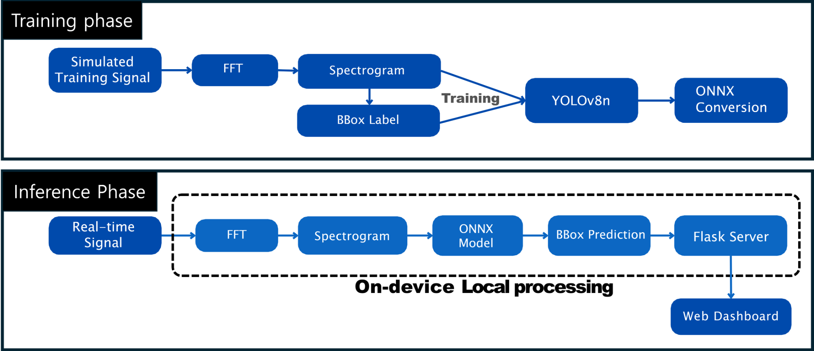
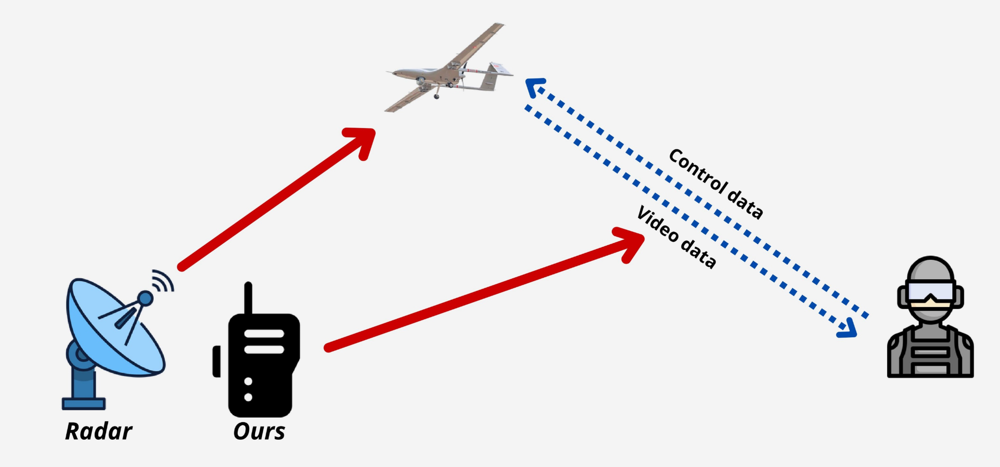
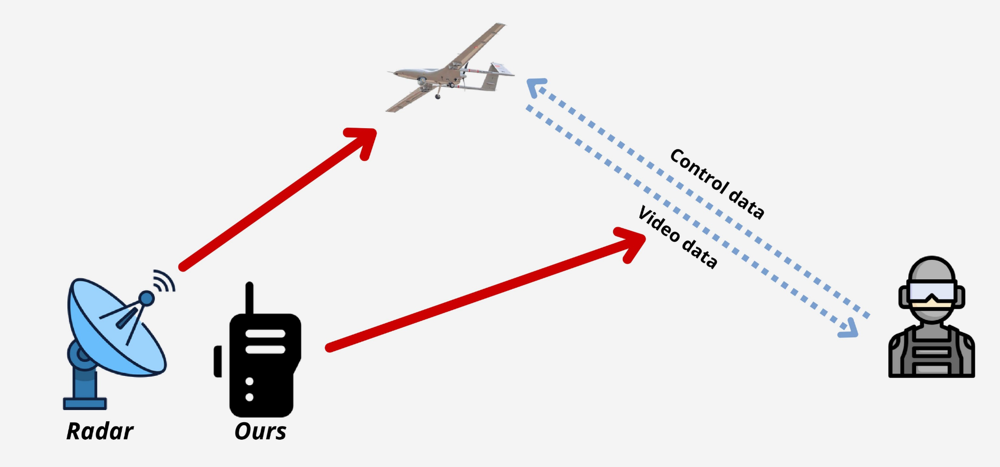
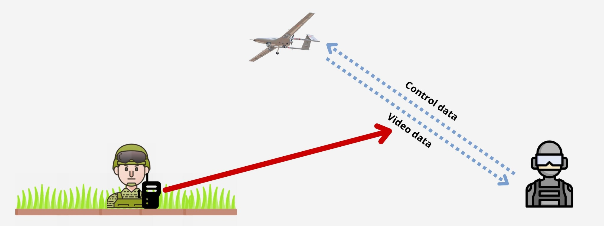
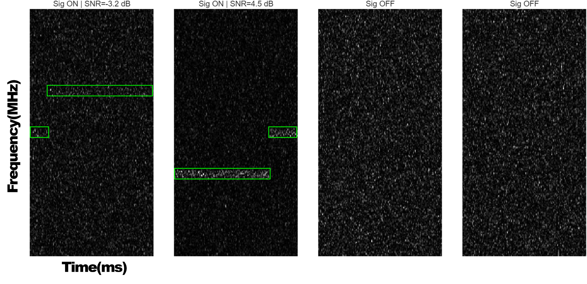
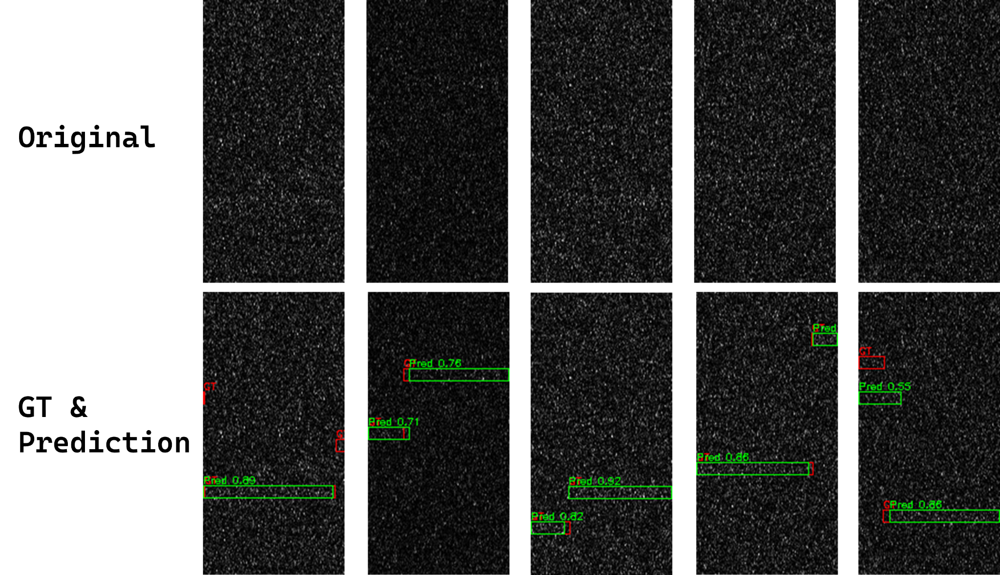
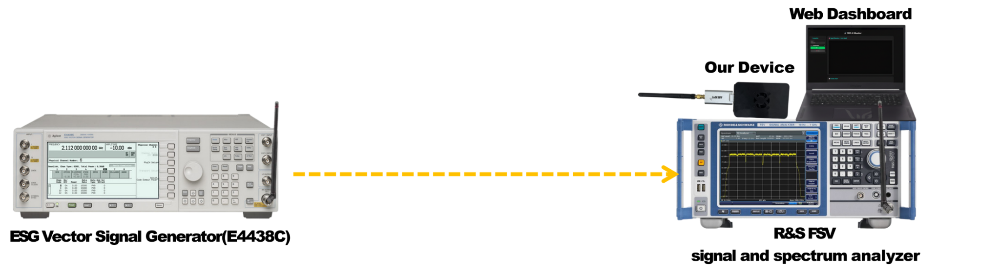
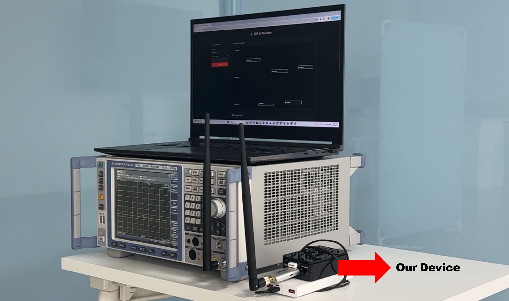

GitHub / Paper / Demo Video 1 / Demo Video 2

본 프로젝트는 저전력 주파수 호핑 신호를 실시간으로 탐지하기 위한 인공지능 기반 스펙트럼 센싱 시스템이다. 핵심 아이디어는 스펙트로그램 기반 주파수 탐지를 객체 탐지 문제로 정의하는 것이다. 시뮬레이션으로 생성한 주파수 호핑 신호를 스펙트로그램 이미지로 변환하고, 신호 영역을 bounding box로 라벨링하여 YOLOv8n 모델을 학습한다. 학습된 모델은 ONNX 형식으로 변환한 뒤 Raspberry Pi 기반 온디바이스 환경에 배포한다.
제안 시스템은 외부 서버 연결 없이 신호 수집, 스펙트로그램 생성, 모델 추론, 대시보드 시각화를 현장에서 수행한다. 이는 통신 인프라가 불안정하거나 외부 서버 사용이 어려운 환경에서 독립적으로 동작하는 탐지 시스템을 목표로 한다.
저고도·저속 무인기는 레이더 반사면적이 작아 레이더 기반 탐지가 어려울 수 있다. 따라서 드론 자체를 직접 탐지하는 방식 대신, 드론과 조종자 간의 무선 통신 신호를 포착하는 접근이 효과적인 대안이 될 수 있다.
하지만 적군은 저전력 송신과 빠른 주파수 호핑을 활용하여 무선 통신 신호의 탐지를 회피할 수 있다. 낮은 SNR 조건에서는 신호가 잡음 바닥과 유사하게 관측되므로, 기존 에너지 탐지 기반 스펙트럼 센싱 방식만으로는 안정적인 식별이 어렵다.



학습 단계에서는 시뮬레이션 기반의 주파수 호핑 신호 데이터를 생성한다. QPSK 변조를 이용하여 심볼을 생성하고, 각 hop 구간마다 서로 다른 중심 주파수를 적용하여 주파수 호핑 신호를 구성한다. 생성된 신호에는 AWGN을 추가하며, SNR 범위는 -5 dB에서 10 dB로 설정한다.
이후 수신 신호는 구간별 FFT를 통해 256 × 128 해상도의 스펙트로그램으로 변환한다. 신호가 존재하는 경우에는 각 hop 신호의 시간 및 주파수 구간을 bounding box 형태로 라벨링한다.

모델 학습 단계에서는 생성된 스펙트로그램과 bounding box 라벨을 이용하여 YOLOv8n 객체 탐지 모델을 학습한다. 스펙트로그램은 자연 이미지와 다른 도메인 특성을 가지므로, 본 프로젝트에서는 사전학습 가중치를 사용하지 않고 scratch 방식으로 학습한다. 또한 신호의 발생 시간, 주파수 위치, 신호 세기가 왜곡되지 않도록 기하학적 및 색상 기반 데이터 증강은 비활성화한다.
| 항목 | 설정 값 |
|---|---|
| 신호 유형 | Frequency Hopping |
| 변조 방식 | QPSK |
| SNR 범위 | -5 dB – 10 dB |
| 이미지 해상도 | 256 × 128 (Frequency × Time) |
| 모델 구조 | YOLOv8n, scratch 학습 |
| 배포 형식 | ONNX |
| 엣지 디바이스 | Raspberry Pi 4 Model B |
실시간 추론 단계에서는 SDR로 수신한 실제 RF 신호를 스펙트로그램으로 변환한 뒤, ONNX 형식의 YOLOv8n 모델에 입력한다. 모델은 bounding box와 confidence score를 출력하며, 탐지 결과는 Flask 기반 웹 대시보드를 통해 실시간으로 시각화한다.
시뮬레이션 기반 평가에서 제안 시스템은 낮은 SNR 조건에서도 안정적인 탐지 성능을 보였다. 발표 자료 기준, SNR -3 dB 환경에서 IoU 0.5 기준 약 99.9%의 신호 유무 탐지 성능을 보였고, IoU 0.9 기준 약 97.8%의 신호 주파수 탐지 성능을 달성하였다.

실제 환경에서는 Signal Generator로 저전력 주파수 호핑 신호를 송출하고, Spectrum Analyzer와 제안 탐지기를 동일한 수신 위치에 배치하였다. 이를 통해 상용 스펙트럼 분석기에서 신호가 육안으로 확인되는 경우와, 잡음 바닥과 유사하여 확인이 어려운 경우를 비교하였다.


| 품목 | 가격 |
|---|---|
| Raspberry Pi 4 Model B (4GB) | 80,900원 |
| Airspy Mini | 145,976원 |
| Raspberry Pi 4 Case | 1,649원 |
| 433MHz SMA(Male) Antenna | 33,000원 |
| 총합 | 261,525원 |
시연은 두 가지 시나리오로 구성된다. 첫 번째는 Analyzer상에서 신호가 보이는 경우이며, 두 번째는 Analyzer상에서 신호가 보이지 않는 저피탐 조건에서 제안 시스템이 신호를 탐지하는 경우이다.
Scenario 1: Analyzer visible / Scenario 2: LPI condition
조성환, 최범영 · 지도교수 정의림 · ACE Lab, 국립한밭대학교